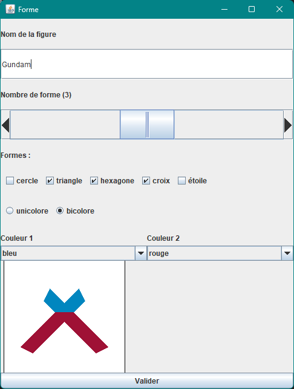

Situation
Dernier DS d'ihm de mon année, je me suis installé face à mon ordi en ne me disant qu'une chose : faire mieux
que le premier DS.
En effet, le premier DS d'IHM c'était avéré être catastrophique. Je suis ressortie de la salle en sachant très bien que j'avais
loupé le DS, mais sans comprendre réelement pourquoi. J'ai donc fait tout mon possible pour réussir le deuxième, qui était le dernier aussi
afin de me venger en quelque sorte de ma piête performance.
Le sujet était simple, composé de cinq exercices menant au résultats suivant : une interface permettant le mélange de figure et de couleur.
Pour voir le code en entier, n'hésitez pas à aller sur répértoire git Eval IHM .